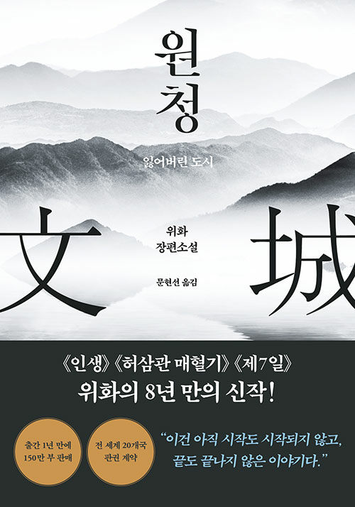
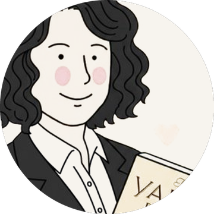
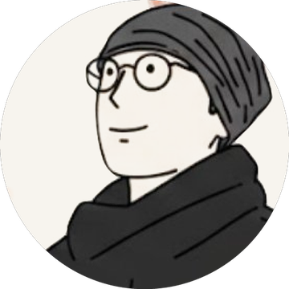

평일 새벽 여섯 시, 화면 앞에 모여
한 문단씩 소리 내어 책을 읽습니다.
그리고 서로의 목소리에 귀를 기울입니다.
아직 찾지 못했고 앞으로도 찾지 못하겠지만,
— 위화, 2022년 12월 서울에서
계속해서 찾을 겁니다

원청(文城)은 이 소설에 나오는 도시의 이름입니다. 그런데 그런 도시는 없습니다. 북방의 남자 린샹푸는 사라진 아내가 말했던 그 도시를 찾아, 갓난 딸을 품에 안고 남쪽으로 내려갑니다. 청나라가 저물고 중화민국이 떠오르던 난세를 가로질러서요.
1부를 린샹푸의 시선으로 다 읽고 나면, 2부 「또 하나의 이야기」에서 같은 시간이 샤오메이의 시선으로 다시 펼쳐집니다. 안다고 믿었던 한 사람의 사연이, 다른 사람의 자리에서 보면 전혀 다른 모양이 되어 있습니다.
“이건 아직 시작도 시작되지 않고,
끝도 끝나지 않은 이야기다.”
처음 오시는 분도 첫날부터 그냥 함께 읽으시면 됩니다.
Zoom에 모여 짧게 안부를 나눈 뒤, 화면에 보이는 순서대로 한 문단씩 돌아가며 읽습니다. 아직 잠이 덜 깬 목소리여도 괜찮습니다.
읽는 동안 마음에 걸린 문장 하나씩. 해석보다 각자의 자리에서 느낀 것, 떠오른 삶의 이야기를 나눕니다.
한 시간 뒤, 이미 하루의 가장 좋은 부분을 지나온 채로 각자의 하루를 시작합니다.
월요일에 시작해 월요일에 끝납니다 · 평일 새벽 6시 · 총 27회
2024년 2월 첫 새벽부터, 한 시즌도 빠짐없이 끝까지 읽어냈습니다.

모두의 심리상담사.
읽은 것이 각자의 삶에 가 닿도록 나눔을 돕습니다.

질문술사.
매일의 새벽을 열고, 좋은 질문 하나를 준비해 옵니다.
책은 미리 읽고 오지 않으셔도 됩니다. 우리는 매일 함께 읽습니다.